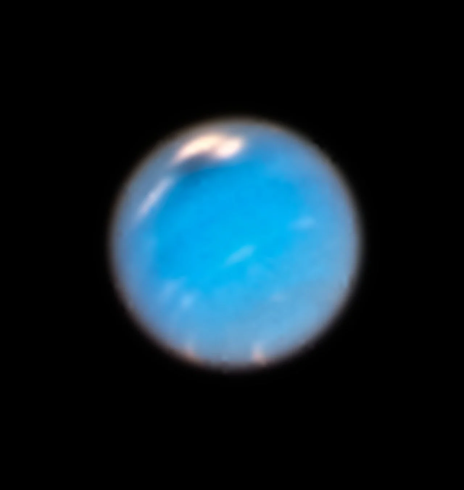

Unser Sonnensystem
Neptun: ferner Eisriese und Namensgeber der Mini-Neptune
Neptun ist der äußerste Planet des Sonnensystems, ein Eisriese mit 3,9 Erdradien und 17,1 Erdmassen. Er umrundet die Sonne in 163,7 Jahren im Abstand von 30,2 AE; die mittlere Temperatur beträgt −200 °C. In seiner Atmosphäre wehen Winde mit Überschallgeschwindigkeit. Als einziger Planet ist er mit bloßem Auge nicht sichtbar.
Nach Neptun sind die „Mini-Neptune“ oder „Sub-Neptune“ benannt: Planeten, die größer als die Erde und kleiner als Neptun sind. Sie sind laut NASA der häufigste Typ unter den bisher in der Milchstraße beobachteten Exoplaneten; im Sonnensystem gibt es keinen solchen Planeten. Warum das so ist, gehört zu den offenen Fragen der Forschung.
Monde: Neptun hat 16 bekannte Monde. Der größte ist Triton mit 2.700 km Durchmesser, entdeckt von William Lassell am 10. Oktober 1846, nur 17 Tage nach dem Planeten selbst. Als einziger großer Mond des Sonnensystems umläuft Triton seinen Planeten rückläufig, also entgegen dessen Drehrichtung; vermutlich ist er ein von Neptun eingefangenes Objekt aus dem Kuipergürtel. Seine Oberfläche ist etwa −235 °C kalt.
Quellen: NASA (NSSDCA): "Planetary Fact Sheet – Metric.", abgerufen am 20.11.2026; NASA (NSSDCA): "Planetary Fact Sheet – Ratio to Earth Values.", abgerufen am 20.11.2026; NASA Science: "Neptune: Facts.", abgerufen am 20.11.2026; NASA Science: "Neptune Moons.", abgerufen am 20.11.2026; NASA Science: "Triton.", abgerufen am 20.11.2026; NASA/JPL Solar System Dynamics: "Planetary Satellite Discovery Circumstances.", abgerufen am 20.11.2026; NASA Science: "What Are Neptunian Planets?", abgerufen am 20.11.2026; NASA Science: "Exoplanets – Planet Types: Overview.", abgerufen am 20.11.2026; NASA Science: "NASA's Webb Lifts Veil on Common but Mysterious Type of Exoplanet.", abgerufen am 20.11.2026; ESA/Webb: "Hot sub-Neptune exoplanet TOI-421 b (NIRISS/NIRSpec transmission spectrum).", abgerufen am 20.11.2026; ESA/Hubble: "A storm is coming" (potw1907a)., abgerufen am 20.11.2026